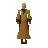

Fisherman

| Config name | fishplatform4 |
| NPC id | 705 |
| Combat level | hidden |
| Category | fisherman_platform |
| Wander range | 5 tiles from spawn |
| Area folder | area_fishing_platform |
| Defined in | scripts/areas/area_fishing_platform/configs/fishing_platform.npc |
Fisherman
Something fishy about him...
Locations
This NPC is not placed on the map by the map files (it may be spawned by scripts, e.g. during quests, or be a variant).
Dialogue
PlayerHello there.
His eyes are fixated staring at the sea..
FishermanKeep away human... Leave or face the deep blue...
PlayerPardon?
FishermanYou will all end up in the blue... Deep deep under the blue...
FishermanMust find family...
PlayerWhat?
FishermanSoon we will all be together...
PlayerAre you ok?
FishermanMust find family... They are all under the blue... Deep deep under the blue...
PlayerErmm... I'll leave you to it then.